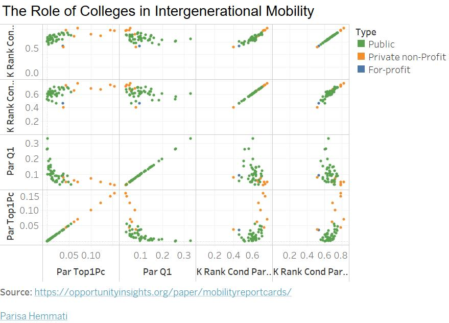

In visualization section we analyze the role of colleges in upward income mobility by constructing publicly available mobility report cards – estimates of student's earnings in their early thirties and their parent's incomes – for each college in America. We use de-identified data from the federal government covering all college students from 1999-2013, building on the Department of Education’s College Scorecard.
This dataset reports the baseline estimates of parent's and children's income distributions by college. We calculate college-level values as means over students in the 1980, 1981 and 1982 birth cohorts. When data for a college from any of these cohorts are incomplete, we use data from 1983 and 1984 cohorts to obtain an estimate.
Opportunity Insights, as part of their research studies, put out publicly available datasets that can be used by researchers and practitioners to support their own work.
Overall, original dataset has 36 columns, below you can find important columns that some of them were used on this website's visualizations and their detailed description:
mr_kq5_pq1: Mobility rate (joint probability of parents in bottom quintile and child in top quintile of the income distribution)
mr_ktop1_pq1: Upper-tail mobility rate (joint probability of parents in bottom quintile and child in top 1% of the income distribution).
k_rank_cond_parq[PARQUINT]: Mean kid earnings rank conditional on parent in quintile[PARQUINT].
par_q[PARQUINT]: Fraction of parents in an income quintile [PARQUINT]. 1 is the bottom quintile and 5 is the top.
par_top[PCTILE]pc: Fraction of parents in the top percentile [PCTILE]. For instance, par_toppt1pc refers to parents in the top 0.1% of the income distribution.
Wrangling
Data has been processed using Tableau. Dataset is narrowed down using columns: Type, Par Top1Pc, Par Q1, K Rank Cond Parq5 and K Rank Cond Parq1 .
Visualizations
D3 Implementation:
The Role of Colleges in Intergenerational Mobility
The plot shows that access to colleges varies greatly by parent income. For example, children whose parents are in the top 1% of the income distribution are more likely to attend private schools than those whose parents are in the bottom income quintile. Also, children from low- and high-income families have similar earnings outcomes conditional on the college they attend, indicating that low-income students are not mismatched at selective colleges.
Furthermore, Rates of upward mobility – the fraction of students who come from families in the bottom income quintile and reach the top quintile – differ substantially across colleges because low-income access varies significantly across colleges with similar earnings outcomes.
Tableau Prototype:

Grade
Letter
Done?
Description
C
This grade requirements has been successfully completed as:
Created 3 different Tableau visualizations.
Used 2 different encodings schemes:
Bar Chart
Area Chart
Line Chart
B
This grade requirements has been successfully completed as:
Implemented one of the Tableau prototypes(Bar Chart) in D3 Version 5
Matched as much of the design as possible from my Tableau prototype.
A
This grade requirements has been successfully completed as:
Implemented one of the Tableau prototypes(Line Chart) in D3 Version 5
Matched as much of the design as possible from my Tableau prototype.
I am a Computer Science graduate student with experience on Wireless protocol development. Beside programming enthusiastic, I am a globetrotter who loves to travel to different part of the world. I have traveled to more than 30 countries up to now and still counting. Reading books and playing piano are my hobbies.